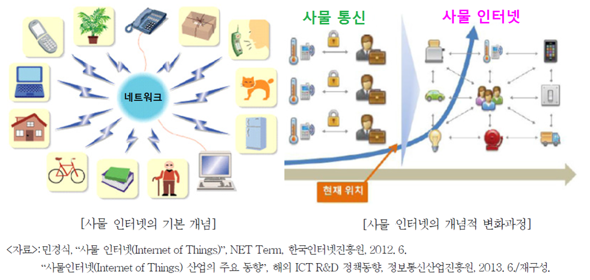

사물인터넷의 개념은 RFID뿐만 아니라 다양한 센서 및 통신기술들과 결합하며 발전해 나가기 시작
WSE(Wireless Sensor Network): 무선 센서 네트워크는 근거리 무선 통신 기능을 포함하고 있는 소형의 센서 장치들이 결합하여 산불 감시, 하천 범람, 건물 내 온도 분포 등 특정 장소의 상태 및 환경 변화 정보를 종합적으로 수집하여 관리하기 위한 기술

M2M(Machine-to-Machine): 이동통신 기술을 이용하여 멀리 떨어져 있는 기계장치와 기계장치를 연결함으로써 효율적으로 장치를 운용하는 기술
병원에서는 응급상황, 환자의 상태모니터링, 의학 데이터 등을 연결하여 건강관리 시스템을 구축

이후 다양한 센서장치와 디바이스를 결합함으로써 새로운 사용자 가치를 창출하려는 시도가 나타나면서, 소비자 유통, 헬스케어, 스마트홈 등 다양한 분야에서 사물인터넷 시대가 본격화되기 시작됨
참고자료: https://terms.naver.com/entry.nhn?docId=3386811&cid=58369&categoryId=58369&expCategoryId=58369
임의의 프로세서를 장착한 일종의 내장형 시스템
사물에 부착된 장치
사물들은 자율적으로 동작하면서 필요한 정보를 공유
사물 통신의 개념이 사물인터넷에 흡수되어 차세대 지능통신으로 발전

 출처: IBM GTO 2014 - IoT 3.0, http://klabcamss.blogspot.kr/2014/08/iot-30.html
출처: IBM GTO 2014 - IoT 3.0, http://klabcamss.blogspot.kr/2014/08/iot-30.html
IoT 1.0 : 디바이스 연결 단계 (초기 단계)
IoT 2.0 : 인프라 구축 단계 (중간 단계)
IoT 3.0 : 산업별 혁신 솔루션 개발 단계 (마지막 단계)
사례4: 스마트 시티
인공 지능의 딥 러닝(Deep Learning)
클라우드 컴퓨팅(Cloud Computing)
기술적인 특징
시장의 특징
상호운용성을 위한 글로벌 표준 확보
| 표준단체 | 개요 |
|---|---|
| 키비콘(Qivicon) | 2011년, 독일 통신사 도이치텔레콤(Deutsche Telekom; DT)의 주도로 설립. 엔베베(EnBW), 미에레(Miele), 삼성전자, 필립스(Phillips) 등 통신, 에너지, 가전 분야의 약 30개 기업이 가입 |
| oneM2M | 2012년, 글로벌 사물 인터넷 서비스 플랫폼 표준 개발을 위해 유럽통신표준협회 (ETSI), 미국 통신 산업 협회(TIA), 미국 통신정보표준협회(ATIS) 등 7개의 세계 주요 표준화 단체가 공동으로 oneM2M을 설립 |
| 올씬얼라이언스(AllSeen Alliance) | 2013년, 퀄컴(Qualcomm)과 리눅스 파운데이션(Linux Foundation), 시스코, 마이크로소프트, LG전자 등이 참가하여 결성한 표준화 단체 |
| 산업 인터넷 컨소시엄(IIC) | 2014년, 인텔과 시스코, AT&T, GE, IBM은 산업용 사물 인터넷에 목적을 둔 표준을 개발하기 위해 결성, 이후 마이크로소프트가 합류 |
| IEEE P2413 | 2014년, IEEE는 사물 인터넷 아키텍쳐 구축을 통해 다양한 산업과 기술 영역으로 확장을 목적으로 IEEE P2413 프로젝트를 공식 개시 |
| 쓰레드그룹(Thread Group) | 2014년, 구글(Nest Labs) 주도로 설립된 사물 인터넷 프로토콜 컨소시엄으로 삼성전자, 암(ARM), 프리스케일(Freescale), 실리콘 랩(Silicon Labs) 등이 참여 |
| 오픈 인터커넥트 컨소시엄(OIC) | 2014년, 인텔, 아트멜(Atmel), 델(Dell), 삼성전자 등은 퀄컴 주도의 올씬얼라이언스에 대항하고, 사물 인터넷 기기의 연결성 확보를 목표로 설립 |
4차 산업혁명을 견인하는 다이버전스 기술, 사물인터넷 (IoT), 생능출판사, 2018.
사물인터넷 (Internet of Things), http://www.kisa.or.kr/uploadfile/201306/201306101740531675.pdf